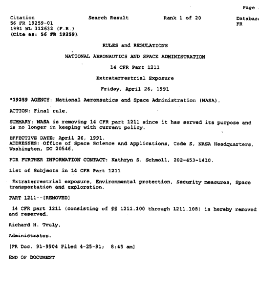

THE EXTRA-TERRESTRIAL
EXPOSURE LAW
On 16 July 1969, a United States law was passed called
the "Extra-Terrestrial Exposure Law" that made it illegal for the public to
come in contact with extra-terrestrials or their vehicles. (Title 14, Section
1211 of the Code of Federal Regulations). Anyone found guilty of such contact
could face up to one year imprisonment as well as a fine of $5000. Also, any
individual who had been "exposed" could be quarantined under armed guard by
the NASA administrator without a hearing.
The law was passed originally to protect Earth from
possible biological contamination resulting from the US Apollo Space Program
and other space exploration programs. It has been suggested by researchers and
scientists that the U.S. government was very concerned that contact with extra-terrestrial
bacteria could result in a worldwide plague. The immune system of human beings
wouldn't be able to fight off extra-terrestrial bacteria, so therefore any kind
of "extra-terrestrial exposure" was taken very seriously.
People in the UFO community especially were alarmed
with the law because its broad definitions could allow the US government to
prosecute people in NASA as well as individuals of the general public who come
into contact with extra-terrestrials and their vehicles.
UFO and ET believers found it interesting that in one
hand the government was denying they had any interest in extra-terrestrials,
yet they had a law which forbid contact with ETs and their craft.
1211.100 Title 14 - Aeronautics and Space
Part 1211 - Extra-terrestrial Exposure
1211.100 - Scope
This part establishes:
- NASA policy, responsibility and authority to guard
the Earth against any harmful contamination or adverse changes in its environment
resulting from personnel, spacecraft and other property returning to the Earth
after landing on or coming within the atmospheric envelope of a celestial
body; and
- security requirements, restrictions and safeguards
that are necessary in the interest of national security.
1211.101 - Applicability
The provisions of this part to all NASA manned and unmanned
space missions which land or come within the atmospheric envelope of a celestial
body and return to the Earth.
1211.102 - Definitions
- "NASA" and the "Administrator" mean, respectively,
the National Aeronautics and Space Administration and the Administrator of
the National Aeronautics and Space Administration or his authorized representative.
- "Extra-terrestrially exposed" means the state of
condition of any person, property, animal or other form of life or matter
whatever, who or which has:
- Touched directly or come within the atmospheric
envelope or any other celestial body
- Touched directly or been in close proximity to
(or been exposed indirectly to) any person, property, animal or other
form of life or matter who or which has been extra-terrestrially exposed
by virtue of paragraph (b)(1) of this section. For example, if person
or thing "A" touches the surface of the Moon, and on "A's" return to Earth,
"B" touches "A" and, subsequently, "C" touches "B", all of these - "A"
through "C" inclusive - would be extra-terrestrially exposed ("A" and
"B" directly; "C" indirectly).
- "Quarantine" means the detention, examination
and decontamination of any persons, property, animal or other form of
life or matter whatever that is extra-terrestrially exposed, and includes
the apprehension or seizure of such person, property, animal or other
form of life or matter whatever.
- "Quarantine period" means a period of consecutive
calendar days as may be established in accordance with 1211.104
Administrative actions.
The Administrator or his designee..shall in his discretion:
-
- Determine the beginning and duration of a quarantine
period with respect to any space mission; the quarantine period as it
applies to various life forms will be announced.
- Designate in writing quarantine officers to exercise
quarantine authority.
- Determine that a particular person, property,
animal, or other form of life or matter, whatever is extra-terrestrially
exposed and quarantine such person, property, animal, or other form of
life or matter whatever. The quarantine may be based only on a determination,
with or without the benefit of a hearing, that there is probable cause
to believe that such person, property, animal or other form of life or
matter whatever is extra-terrestrially exposed.
- Determine within the United States or within
vessels or vehicles of the United States the place, boundaries, and rules
of operation of necessary quarantine stations.
- Provide for guard services by contract or otherwise,
as many be necessary, to maintain security and inviolability of quarantine
stations and quarantined persons, property, animals or other form of life
or matter whatever.
- Provide for the subsistence, health and welfare
of persons quarantined under the provisions of this part.
- Hold such hearings at such times, in such manner
and for such purposes as may be desirable or necessary under this part,
including hearings for the purpose of creating a record for use in making
any determination under this part for the purpose of reviewing any such
determination.
-
- During any period of announced quarantine,
no person shall enter or depart from the limits of the quarantine station
without permission of the cognizant NASA officer. During such period,
the posted perimeter of a quarantine station shall be secured by armed
guard.
- Any person who enters the limits of any quarantine
station during the quarantine period shall be deemed to have consented
to the quarantine of his person if it is determined that he is or has
become extra-terrestrially exposed.
- At the earliest practicable time, each person
who is quarantined by NASA shall be given a reasonable opportunity to
communicate by telephone with legal counsel or other persons of his choice.
1211.107 Court or other process
- NASA officers and employees are prohibited from discharging
from the limits of a quarantine station any quarantined person, property,
animal or other form of life or matter whatever during order or other request,
order or demand an announced quarantine period in compliance with a subpoena,
show cause or any court or other authority without the prior approval of the
General Counsel and the Administrator.
- Where approval to discharge a quarantined person,
property, animal or other form of life or matter whatever in compliance with
such a request, order or demand of any court or other authority is not given,
the person to whom it is directed shall, if possible, appear in court or before
the other authority and respectfully state his inability to comply, relying
for his action on this 1211.107.
1211.108 Violations
Whoever willfully violates, attempts to violate, or
conspires to violate any provision of this part or any regulation or order issued
under this part or who enters or departs from the limits of a quarantine station
in disregard of the quarantine rules or regulations or without permission of
the NASA quarantine officer shall be fined not more that $5,000 or imprisoned
not more than 1 year, or both.
Removal of the Extra-terrestrial Exposure Law

Main Menu
|